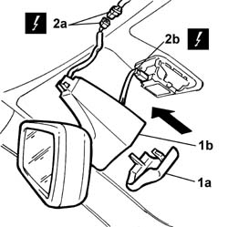

7065C68 INTERIOR REAR VIEW MIRROR - R.R.
- Path
- Procedures > 70 FITTINGS > 7065 SEAT BELTS AND ACCESSORIES > 7065C ACCESSORIES AND DECORATIONS > 7065C68 INTERIOR REAR VIEW MIRROR - R.R.
- Kind
- repair procedure (removal / refitting; the operation number is the code)
- Applies to
- all engines; all production periods
- Interactive page
- https://sloeber94.github.io/elrnDB-lThss/en/#/80789
Applies to: all engines; all production periods
 Removing
Removing
 Refitting
Refitting- Disconnect the negative battery terminal.
See in Op. 7040E50 Front MODULAR COURTESY LIGHT UNIT - R.R.
1. Release the shield (1a) and release the rear view mirror (1b) in the direction shown by the arrow.
2. Disconnect the electrical connectors (2a) and (2b).

Applies to: all engines; all production periods
Refitting
Removing- Connect the electrical connectors.
- Fit the rear view mirror in place and fit the shield.
See in Op. 7040E50 Front MODULAR COURTESY LIGHT UNIT - R.R.
- Connect the negative battery terminal.